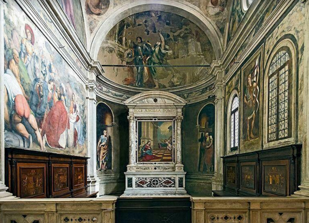
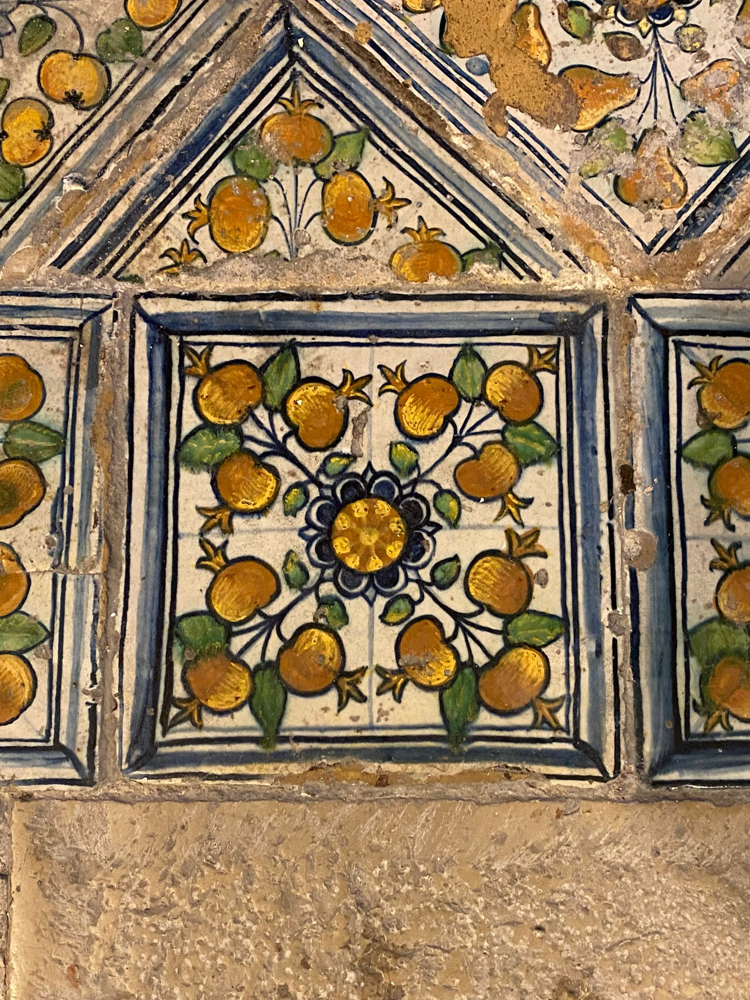

Il Duomo di Treviso – opere e interno
Il maestoso interno si presenta a tre navate, con cappelle laterali e tre absidi finali; sotto di esse si
trova l'antica cripta con le tombe dei vescovi della città. Il duomo di Treviso trabocca di opere che
raccontano di episodi sacri ma soprattutto testimoniano la storia della città, come la cappella del
Malchiostro che porta i segni dei 7 minuti di bombardamento continuo che la città di Treviso subì il
7 aprile del 1944.
Partendo dall’inizio della navata a destra troviamo la prima Cappella dove vi è collocata la tomba
del beato Arrigo da Bolzano. Egli, dopo la morte del figlio e della moglie, iniziò a mendicare ma le
sue elemosine non le utilizzava per sé stesso, le dava ad altri poveretti. Durante i suoi funerali
vennero registrati più di 300 miracoli: Arrigo da Bolzano è stato un personaggio così influente che
pure un poeta dello spessore di Boccaccio gli riservò un posto nella seconda novella della sua opera
più importante, il Decameron.
Si crede che nella teca sia conservato il sangue corrotto e profumato del santo.
Subito dopo la cappella del beato Arrigo da Bolzano incontriamo la cappella della Madonna, qui vi
si trova una statua che rappresenta Maria Ausiliatrice.
Sui pilastri antistanti la cappella della Madonna si trovano, sul primo, la statua di Alessandro Vittoria
raffigurante San Giovanni; mentre sul secondo pilastro c’è un bassorilievo di Lorenzo.
Bregno che racconta l’episodio della visitazione. La scultura in marmo, proveniente dalla
chiesa di San Francesco di Treviso, è posta all’interno della nicchia ricavata nel primo pilastro.
L’iscrizione
incisa sul basamento ricorda che fu scolpita da Alessandro Vittoria nella seconda metà del sec. XVI. San
Giovanni Battista presenta una leggera torsione che prende le mosse dall’accenno di un passo. Il braccio
sinistro abbassato sostiene un bastone che termina a croce sul quale si avvolge un cartiglio con la scritta
“Ecce agnus Dei”, ecco l’agnello di Dio, attributo iconografico del Santo,
mentre l’altro, piegato, conferisce alla parte superiore del corpo una dinamicità nel senso opposto alle
gambe.
Questa virtuosistica torsione della figura nello spazio è tipica del gusto manierista. In questa scultura un
bordo di pelo di cammello ricorda l’abito che i Vangeli attribuiscono al Battista, mentre nel busto risalta
la
descrizione anatomica della muscolatura.
La vergine giunta alla capanna stringe la mano ed abbraccia Elisabetta. La condizione
delle due donne è sottolineata dalla presenza della lepre, simbolo della fecondità. Viene esternata la fede
di
Maria: ella crede ciecamente ed il concetto viene simboleggiato attraverso la rappresentazione della
lucertola
che esce da una fessura. Secondo le antiche credenze questo animale diventa cieco con l’età, ma la cecità
non
gli impedisce di rivolgere la testa verso il sole nascente, ovvero verso “Cristo che è il vero sole”, quindi
la
madonna. Inoltre in questo periodo (anno 2022) nella cappella della Madonna è esposto anche un ritratto di
San
Giuseppe della scuola caravvaggesca. San Giuseppe è ritratto con in mano un bastone fiorito, come da
tradizione.
Successivamente troviamo un’altra opera molto interessante: “Il pane della carità”. Di
Safete Zec, pittore musulmano, riconosciuto dalla critica internazionale tra i massimi interpreti di un
figurativo visionario e poetico.
L’elemento unificante dell’opera è sicuramente il pane, richiamo eloquente al pane eucaristico e al pane
spezzato della carità, poiché ognuno dei santi rappresentati è testimone di una delle forma della carità di
Cristo. La scena prende vita dal centro, dove è situato Gesù in atto di consegnare il pane ai santi che lo
circondano; attorno a Gesù è radunata la chiesa di Treviso e i ministeri della carità che essa ha
esercitato: il
ministero ordinato, nella figura di S. Pio X e dei vescovi S. Giovanni Antonio Farina e beato Andrea G.
Longhin.
Il grande cesto dei pani di S. Pio X ricorda la rinnovata pratica eucaristica da lui promossa e,
soprattutto, il
dono dell’eucaristia che egli ha fatto ai fanciulli. Il pane fra le mani di S. Giovanni A. Farina è memoria
della carità lungimirante che ha fatto di lui, in un secolo difficile per il dialogo tra la Chiesa e il
mondo,
il profeta della scelta amorevole e rigorosa degli ultimi, carisma che ha consegnato alle sue figlie.
Il beato Longhin congiunge le sue mani disarmate, alzate al cielo nella tragedia della guerra: pane fu la
sua
preghiera, la sua fede, la sua parola, il suo coraggio, l’incrollabile fiducia seminata negli anni della
ricostruzione.
S. Maria Bertilla, suora dorotea figlia del Farina, attiva accanto ai malati nell'ospedale di Treviso, e S.
Giuseppina Bakhita, canossiana, sono la presenza essenziale dei carismi. Ogni carisma è un pane donato per
sempre e senza misura, e ogni uomo e donna consacrati nei voti sono pane per l’umanità. Bertilla fu un pane
donato e mangiato dai malati, dai soldati feriti della I guerra mondiale e dai bambini difterici. Giuseppina
Bakhita è il pane misterioso macinato nel dolore della schiavitù e delle torture, profezia salvifica del
dolore
che ancora oggi sevizia e fa schiavi tanti uomini e donne nel mondo.
Il beato Giuseppe Toniolo rappresenta il laicato cattolico, il cristianesimo adulto e attivo che si prende
cura
degli uomini, mettendo a servizio della società la scienza illuminata dalla sapienza cristiana. Egli tiene
un
pane fra le mani: è la carità della scienza economica cristianamente ispirata che tanto ha contribuito alla
formazione della dottrina sociale della Chiesa.
Il quadro lascia intravedere una teoria di persone portatrici di pane che entrano discretamente nella scena,
come ognuno di noi quando, con piccoli gesti di carità, mette nelle mani di Gesù e della sua Chiesa il pane
della carità. Anche così si racconta la storia della nostra Chiesa. E ciascuno di coloro che si fermeranno
di
fronte alla pala è autorizzato ad aggiungere altri protagonisti della carità, figli della nostra Chiesa di
ieri
e di oggi.
La Cappella del Malchiostro
La cappella commissionata da Broccardo Malchiostro, è progettata da Tullio e Antonio Lombardo
in stile rinascimentale, si trova accanto all’altare maggiore. Vi si concentrano opere di artisti tra i
più rappresentativi del Rinascimento veneto. La cappella dell’Annunziata o Malchiostro è decorata
con tele di Paris Bordone, “Adorazione dei pastori” e “Pala di S. Lorenzo” sulla sinistra del
Vestibolo; di Girolamo da Treviso, la “Madonna del Fiore”, e di Domenico Capriolo “l’Assunzione
della Vergine”.
I notevoli affreschi (1520) sono del Pordenone e della sua bottega e, del Tiziano è la splendida e
innovativa tavola dell’ ”Annunciazione all'altare”. Nell’affresco Augusto chiede alla Sibilla chi è il
più potente, la Sibilla però non indica lui ma rivolge il suo sguardo verso il cielo per indicare che
l’uomo più potente è Gesù.


L'Annunciazione del Malchiostro
L'Annunciazione del Malchiostro è un dipinto a olio su tavola (210x176 cm) di Tiziano, databile al
1520 circa e conservato nella Cattedrale di Treviso nell'omonima cappella.
La pala sembra essere datata tra il 1520 e il 1523. È inserita in un’elegante cornice marmorea. La
pala è scandita dall’imponente architettura scorciata aperta sul paesaggio e dal pavimento a
riquadri. Nella navata a scacchi ha luogo l’annunciazione. Tiziano rivoluziona l’iconografia
tradizionale: la Vergine si presenta in preghiera atta a ricevere il messaggio divino attraverso una
torsione assoluta della composizione; infatti, Tiziano posiziona la Madonna in primo piano, mentre
dalla parte destra irrompe l’angelo, accompagnato dalla luce divina, che coglie la Madonna alle
spalle. La novità nella composizione del Tiziano consiste nel fatto che l’angelo viene ridotto
dell’artista ad essere un personaggio secondario essendo rimpicciolito dalla profondità nella quale
è inserito.
La Vergine è vestita di due colori simbolici: l’azzurro, il colore della trascendenza cioè la forma di
esistenza non riconducibile alle determinazioni dell’esperienza e il rosso che indica la sua umanità.
L’angelo è vestito di bianco, essendo quest’ultimo il colore tipico delle figure che non hanno il peso
del corpo ad indicare la spiritualità della figura celeste.
Nell’opera è anche rappresentato il committente dell’opera, esso si trova quasi sul punto di vista
prospettico, attirando su di sé lo sguardo dell’osservatore e assumendo, così, una notevole rilevanza
sul piano visivo. Lo spettatore insieme ai particolari architettonici giustificano la finzione teatrale
che si avverte quando si guarda l’opera.
La ristrutturazione
La firma e la data di realizzazione del dipinto sono emersi nel corso dei lavori di restauro iniziati a
giugno del 2021. Questa scoperta conferma il ruolo svolto dal Maestro, ridimensionando pure
quello della sua bottega. La firma e la data erano stati coperti, alla base della pavimentazione, da
uno strato di pittura durante uno dei tanti interventi conservativi.
Sempre nella cappella del Malchiostro si trova un altro importante affresco:
“L’adorazione dei Magi”.
Questa è la scena più importante del ciclo pittorico, sia per la sua vastità che per l’interpretazione
attuata del Pordenone. La firma del pittore è leggibile nel basamento dove appoggia il Bambino:
“BROCARDI.MAL/CANO.TAR./CURA ATQUE/SUMPTU/IO.ANT.s/CORTI/CELLUS P./MDXX”
L’ampia dilatazione del corpo della figura maschile vista di spalle, e del mantello del primo dei re
Magi occupa il primo piano. La loro posizione divergente apre la vista ai personaggi del corteo che
si dipana occupando lo spazio retrostante e si proietta verso il cippo marmoreo sul quale si ritrae il
Bambino, accolto nell’abbraccio della Vergine. Sullo sfondo della scena si trovano tre padiglioni
con gli stemmi dei prelati e quello di Ludovico Marcello, illustre personaggio priore della
Commenda trevigiana dell’ordine Gerosolimitano, presenza sicuramente comprensibile e
significativa per lo spettatore dell’epoca.
Nell'enfasi delle forme e nell' accentuazione del movimento, il Pordenone evidenzia il proprio stile
pittorico già caratterizzato da un precoce manierismo: palese esempio è la muscolosa figura di
spalle, in basso a sinistra, di chiara derivazione michelangiolesca. L’intensa caratterizzazione dei
volti ha determinato l’ipotesi della presenza di alcuni ritratti di contemporanei. Broccardo
Malchiostro viene riconosciuto nel San Giuseppe e il vescovo de' Rossi nel re Magio recante
l'ostensorio a reliquiario. Il coinvolgimento con la realtà epocale si attua anche attraverso gli
oggetti donati dai re Magi poiché appartengono al tesoro della Cattedrale di Treviso: la pisside a
forma di cofanetto esagonale è datata 1474, e l’Ostensorio con la teca in cristallo di rocca, secondo
la tradizione, è stato donato alla Cattedrale dal vescovo De Rossi.
Nella parte più alta della cappella del Malchiostro si trova un busto di terracotta si crede rappresenti il
vescovo De Rossi.
Altare maggiore
Al centro si trova l'altare maggiore e dietro, un presbiterio profondo quanto la navata caratterizzato
da diversi apparati decorativi quali l'affresco del catino absidale raffigurante l'Immacolata,
dell'artista trevigiano Antonio Beni, o gli stalli del coro, dedicati ai canonici e ai presbiteri durante
le grandi concelebrazioni episcopali. Sul lato sinistro, le stanze sono sormontate da un affresco di
Biagio Biagetti: “l'Apoteosi di San Pio X”.
L'altare, consacrato dal Vescovo Paolo Magnani nel 1999, è costituito dal primitivo sarcofago che
conteneva le spoglie del beato Arrigo da Bolzano, del XIV secolo, mentre la cattedra e l'ambone
sono nuovi, realizzati dallo scultore lombardo Mario Rudelli.
Il complesso absidale si deve all'intervento di Pietro Lombardo e figli, autori del vecchio altare
maggiore, conservante le spoglie dei martiri Teonisto, Tabra e Tabrata e anche del monumento del
vescovo Giovanni Dacre noto anche come Zanetto (1486), posto sulla parete di sinistra. Di fronte a
quest'ultimo, il monumento a papa Alessandro VIII Ottoboni, opera barocca di Giovanni Bonazza
realizzato tra il 1689 e il 1693.
Monumento sepolcrale del vescovo Giovanni Zanetto da Udine, vescovo
di Treviso dal 1478 al 1485;
Eseguito negli anni Ottanta del Quattrocento, dai due figli di Pietro Lombardo, Tullio e Antonio, ancora
legati ai modelli e motivi paterni. Una cornice ovale, con fondo a marmi
policromi, racchiude il complesso delle sculture ed il sarcofago. Nella
parte inferiore un festone sorregge una grande aquila giovannea con le
ali spiegate come sul punto di spiccare il volo. Nella parte mediana,
sorretto da mensole, sporge il sarcofago ornato da elegantissimi motivi
tratti dal repertorio della bottega lombardesca: al centro un’altra aquila
e due sirene, ai lati racemi popolati da serpi e da piccoli volatili che
beccano i frutti. Le decorazioni proprie di gusto classico antiquariato,
forse alludevano ad un’idea cristiana di salvezza. In alto il gruppo
statuario: Dio Padre con il globo sormontato dalla croce è rivolto verso
San Giovanni recante il bacolo pastorale, segno della digità ecclesistica
per l’esercizio della quale lo Zanetto, a sinistra deve essere giudicato.
Monumento celebrativo del papa Alessandro VIII, nella parete di
fronte a quella del monumento del Vescovo Zanetto.
Entro una cornice ovale si trova il monumento a Pietro Vito Ottoboni divenuto papa Alessandro VIII nel 1689,
già canonico della Cattedrale di Treviso. L’opera venne scolpita da Giovanni Bonazza, nel 1693. Il monumento
è, in parte, racchiuso in uno spazio ovale uguale a quello
che lo fronteggia. L’enfasi celebrativa, che si adatta al gusto barocco,
caratterizza il complesso scultoreo formato da un mensolare, recante
l’iscrizione, sul quale sono posate le statue: al centro il papa, paffuto e
sorridente, intento a benedire, ai lati, un angelo con la croce papale e
il leone marciano reggente lo stemma della famiglia veneziana degli
Ottoboni. Un ricco paludamento circonda il complesso. È
interessante il confronto dialettico e stilistico che si è instaurato tra i
due monumenti che si fronteggiano: quest’opera è caratterizzata da
una eloquente gestualità e da un evidente movimento che si
contrappone all’elegante compostezza classica del Monumento di
Zanetto da Udine.
L’affresco più antico del duomo lo troviamo nella cripta, affiorato in seguito alle cadute di intonaco
causate dal bombardamento del 1944, l’affresco è stato realizzato da un maestro che conosceva
bene le soluzioni bizantine tipiche delle prime manifestazioni della pittura trecentesca veneziana.
La vergine Maria e San Giovanni apostolo si raggruppano attorno all’immagine centrale di Cristo
sulla croce. Il suo volto ricorda le opere di Giunta Pisano mentre alcuni aspetti della fisionomia di
San Giovanni ricordano le opere romaniche dell’Italia centrale. Nel riquadro inferiore sono dipinti
tre santi, tra essi l’unico riconsocibile è San Giovanni Battista che reca un cartiglio dove si legge
“VOX CLAMANTIS IN DESERTO",
“La voce che chiama nel deserto”.
Non è sicuramente l’unica particolarità della cripta. Ci si trova infatti in un mondo affascinante sia
spiritualmente che storicamente, in una sorta di foresta di piccole colonne marmoree consunte dal
tempo dove i segni degli scalpelli indicano il passaggio della peste. Per debellare l'epidemia infatti
si usava rivestire tutte le pareti, affreschi inclusi, di calce viva. Passata l'epidemia, si toglieva la
calce ormai indurita a suon di scalpello che purtroppo ha lasciato i tipici segni di scalfittura.
In origine la cripta era completamente affrescata. Sono presenti affreschi attribuiti alla scuola di
Tommaso da Modena.
Questo affresco è il meglio conservato nella cripta. La cifra stilistica, rappresentata dai volti
espressivi con incarnati densi e caldi e dalle ricche cadenze delle pieghe delle vesti, è facilmente
riscontrabile nel Maestro di Sant’Agostino a Vicenza. La Madonna siede al centro seduta in un
ampio trono trattenendo il Bambino; i Santi si accoppiano ai lati rivolgendosi verso la Vergine.
Tra gli affreschi della cripta meglio conservati possiamo trovare anche questa Madonna con
bambino. La dolcissima espressione della Madonna rende questo brano pittorico particolarmente
amabile e raffinato. Sia la Vergine che il bambino sorridenti volgono lo sguardo verso il fedele che
percorre lo spazio tra le colonne della cripta. Anche in questo affresco si riprende il gusto per
l’incarnato teneramente rosato, mentre nel manto il colore è steso con graduali passaggi tonali che
rendono l’effetto volumetrico nelle pieghe della veste rossa.
Nell’abside è posizionato l’affresco di San Liberale (soldato
romano che si convertì al cristianesimo e fattosi infine eremita),
patrono di Treviso, anch’esso conservato abbastanza bene nel
tempo. Il santo ritto in posizione frontale, con la spada che
fuoriesce dal manto, si staglia sul fondo verde che definisce lo
spazio terreno, visibile solo a sinistra perché dall’altro lato è
coperto da fasce decorative. L’incarnato del volto è reso con
accurata levigatezza “da porcellana”, e la definizione grafica di
alcuni particolari, naso lungo ed occhi spalancati con la palpebra
inferiore diritta, richiama nettamente gli stilemi tommaseschi.
Il modo con il quale il pittore descrive le pieghe del manto,
chiaro bordato di blu, dimostra il possesso di un sicuro
patrimonio di abilità tecniche.
Inoltre, sempre nella cripta nell’abside dove si trova “l’Arca di San Liberale” si conserva ancora oggi
un pavimento in piastrelle di maiolica policroma, a motivi vegetali e frutta, probabilmente di
fabbrica veneziana realizzato nel XVI secolo.
